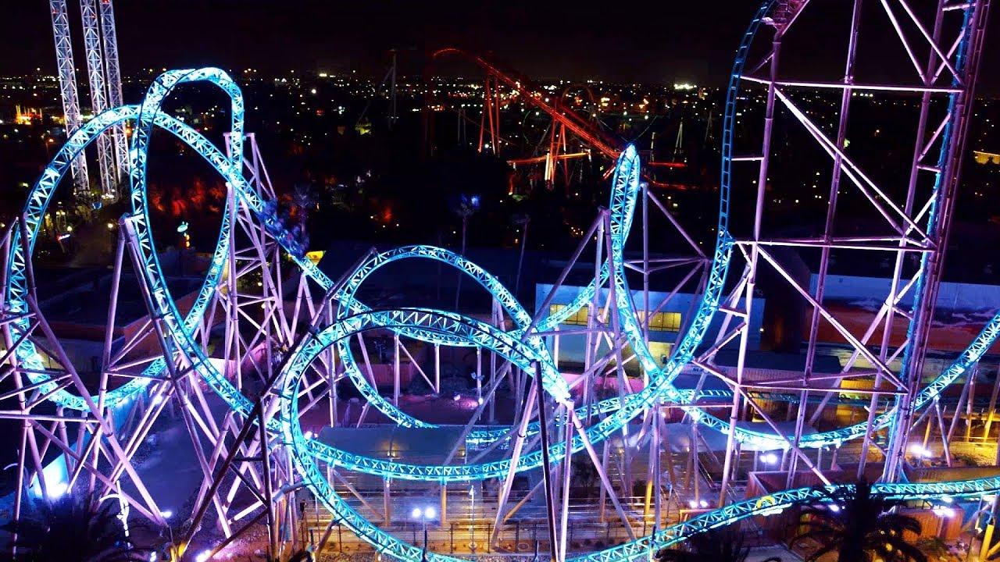

Roller coasters date back all the way to 1884, the first being built in Coney Island, New York known as the Switchback Railway. Now, there are coasters all around the world waiting to be experienced! From old school wooden coasters to modern steel giants, roller coasters offer all kinds of unique experiences. There isn't much out there that can provide the adrenaline rush and thrills that a roller coaster can. There are over 6,000 roller coasters around the world and over 4,000 theme parks! Some parks prioritize pure thrills and adrenaline such as Six Flags, while others such as the well-known Disney and Universal parks prioritize family fun and transporting you to your favorite worlds through heavy theming. The progression and variety of the theme park industry over hundreds of years is incredibly interesting and even better to experience for yourself! Click here to see parks and coasters all around the world.
